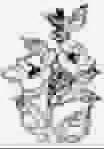

山茶花
●郭沫若
昨晚从山上回来，采了几串茨实、几簇秋楂、几枝蓓蕾着的山茶。
我把它们投插在一个铁壶里面，挂在壁间。
鲜红的楂子和嫩黄的茨实衬着浓碧的山茶叶——这是怎么也不能描画了的一种风味。
黑色的铁壶更和苔衣深厚的岩骨一样了。
今早刚从熟睡里醒来时，小小的一室里漾着一种清香的不知名的花气。
这是从什么地方吹来的呀？——
原来铁壶中投插着的山茶，竟开了四朵白色的鲜花！
啊，清秋活在我壶里了！
（侯国刚摘自《郭沫若散文选集》）